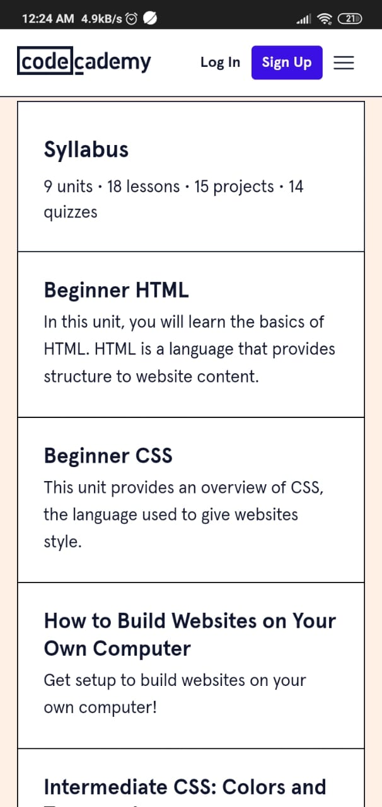

White Space
Webflow University
university.webflow.comOn this page you can see how the empty space around the text highlights its importance and draws the user's attention, while complementing it with a call to action within the text.
Contrast
Interaction Design Foundation
www.interaction-design.orgThe color contrast between the background and the buttons is a clear call to attention and guides the user on the screen, inviting them to action.
Alignment
Codecademy.com
codecademy.com In this example, the information is well organized and aligned, giving a clear and comprehensive vision to the user, which gives them a pleasant experience that will make them visit the website again.